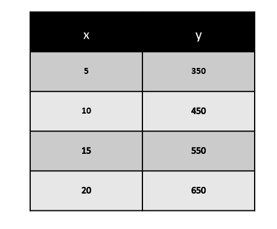

MATH-ICT Integrated Performance Task

John Miccoh Reyes
"Life is parang programming"

John Cyler Gutierrez
"Baliw sa school, mabait sa bahay"
Relation and Function - Table of Values
Comparing two numbers is finding the relation between them. Relations and Functions between any two entities gives us the link between them. Special relations in Mathematics obtain a precise correspondence between any two entities. These special relations are known as functions.
Table of Values
A table of values is a graphic organizer or chart that helps you determine two or more points that can be used to create your graph.
Sample Problem
If Cyler loses 50 ounces of sweat per hour from running a marathon. How much sweat will Cyler lose in 3, 5, 7, and 9 hours?
Domain - {3, 5, 7, 9}
Range – {150, 250, 350, 450}
Ordered Pair - { (5, 150), (10, 250), (15, 350), (20, 450) }
Table

Discussion
Tables of values are fundamental in mathematics, organizing data systematically to illustrate relationships between independent and dependent variables. They play a crucial role in graphing functions and are widely applicable in scientific experiments, economics, and data analysis. Their simplicity and effectiveness make tables of values essential tools for understanding mathematical relationships and presenting information in a clear, organized format across diverse disciplines.